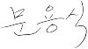

안녕하십니까,
한국정보화진흥원 홈페이지에 오신 것을 환영합니다.
“한국정보화진흥원(NIA)은 ICT로 우리사회의 현안을
해결하고 국가미래를 열어갑니다.”
오늘날 세계는 4차산업혁명이라는 새로운 시대를 맞아 정치, 경제, 사회, 문화 전반에서 디지털 혁신이 촉발되는 지능정보사회로 진입하고 있습니다.
선진국들은 지능정보기술을 기반으로 국가 경쟁력을 강화하고 사회적 난제를 해결하여 새로운 성장의 기회를 창출하기 위해 국가적 역량을 집중하고 있습니다.
한국정보화진흥원(NIA)은 지난 31년 동안 우리나라의 정보화를 이끌어 온 경험과 노하우를 바탕으로 국가 CTO와 CIO 역할을 수행하는 서포트 타워로서 우리나라가 4차산업혁명 시대를 선도하여 지능정보사회를 건설할 수 있도록 모든 노력을 기울여 나가겠습니다.
NIA 홈페이지를 통해 지능정보사회의 미래상, 현재의 기술 트랜드, 과거의 역사, 그리고 기관의 경영현황을 한 눈에 보실 수 있도록 다양하고 의미있는 정보를 제공할 것을 약속드립니다.
감사합니다.
한국정보화진흥원 원장 문용식